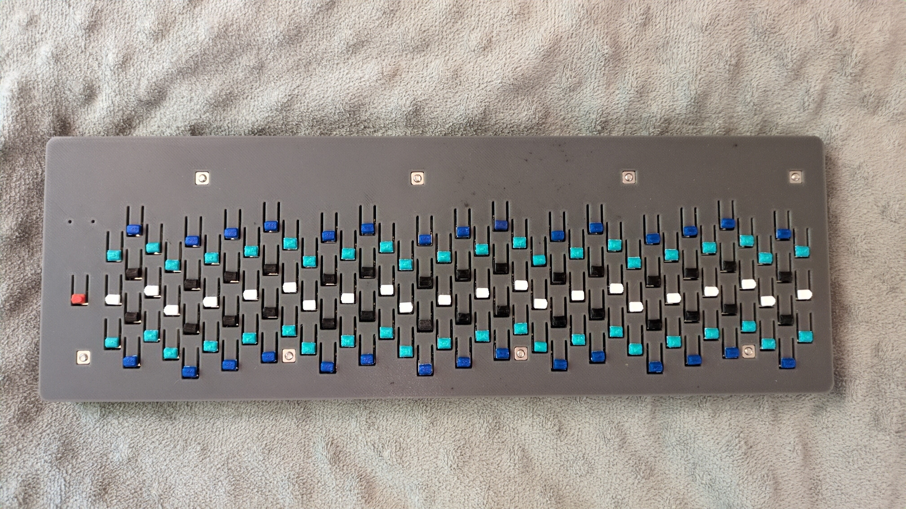

Earlier this year (2025), I’d been working on a project of mine involving music hardware, and this is essentially the result. I’ve decided to call this model the TS41 because the keys use Tactile Switches, and because it’s designed to play in 41-tone equal temperament (there are 41 keys per octave, 126 total).

The MIDI keyboard isn’t velocity-sensitive, but it is plug-and-play and I’ve confirmed that it works on both Linux and Windows, and the device name correctly shows on both operating systems, so it should work on macOS just the same. The keyboard itself does not retune or send microtonal MIDI data to the thing being played. The keyboard sends plain MIDI note-on and note-off messages, and the retuning is supposed to be done independently, whether it’s with MTS-ESP in a DAW or using a synthesizer’s on-board tuning tables. Retuning with MPE may come in a future update.I have hard-coded 3 different layout modes into it: 41-tone mode, 31-tone mode, and 22-tone mode. Pressing the red button on the left cycles through these modes. Of course, I realize people may want to play in tuning systems with other numbers of notes per octave, tritave, or whatever, so I plan to do something about that. I thought about making and releasing one or more scripts to generate the settings source code file, but I made a text file that acts as a catalog for a bunch of different layouts instead. Maybe I’ll update it when someone wants to add a layout and I think it’s nice enough.
The firmware for the keyboard is open source and can be found here.
For the hardware, the microcontroller is the Adafruit KB2040, which uses the same processor as the Raspberry Pi Pico. The key scanning works by using 16 8-bit shift registers, although now I realize I could have probably done this more efficiently using a matrix.
Here’s the promo video I made for this keyboard: